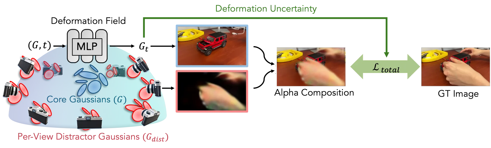
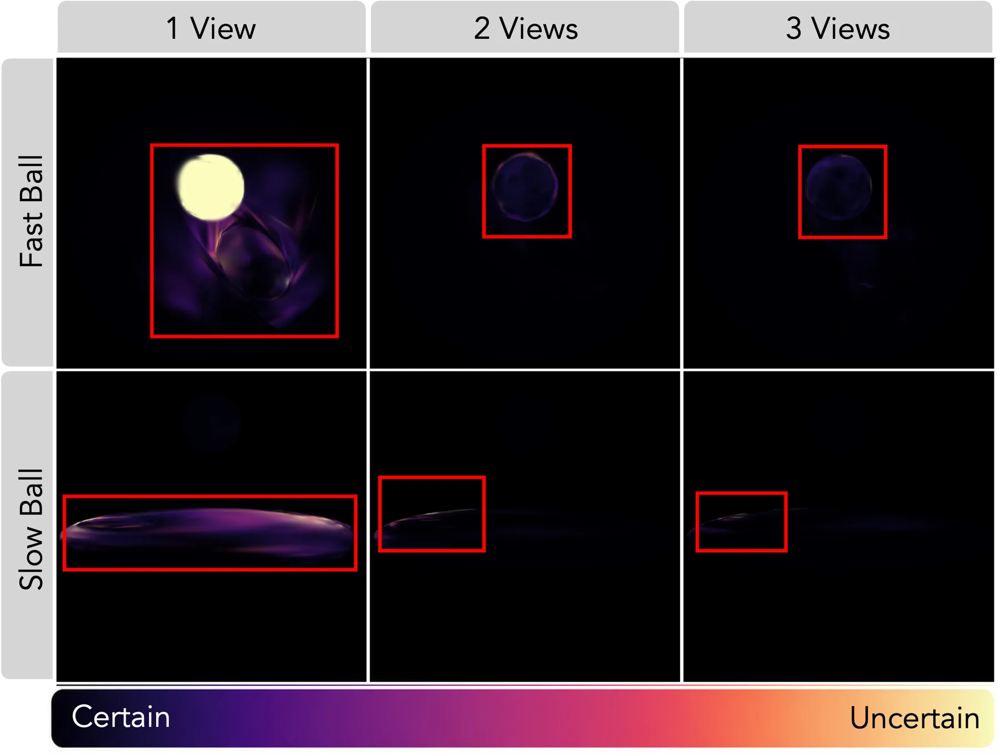
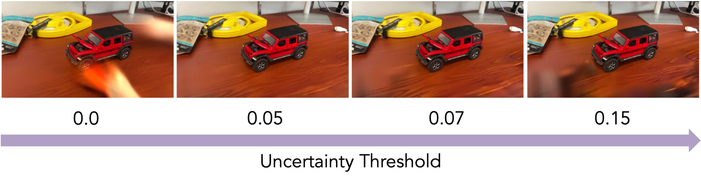
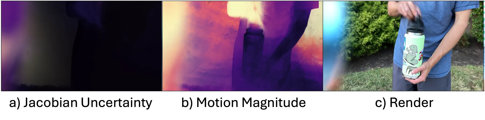

ReCan-GS：只重建能重建的部分，去干扰的 4D 高斯泼溅
Reconstruct What You Can: Distractor-free 4D Gaussian Splatting
这篇的贡献不是又一个去干扰网络，而是把“该被删掉的东西”定义成一个可计算的量：形变场对输入（位置、时间）的雅可比协方差迹。分数高的高斯被正则项推给逐视图 distractor 层，或在训练后按分位剪掉。它在动态+干扰场景上 PSNR 与 DeformableGS 互有胜负，但在“干扰是否被保留”这件事上优势极大（Jeep 上人类标注 0% 的帧还能看到遮挡物），代价是训练时间与显存上升、在静态去干扰基准上反而变差。
PSNR on Bouncing Balls
Retained-distractor frames on Jeep
Distractor localization IoU
作者、单位与技术谱系 · Research context
作者与单位
研究脉络
- DeformableGS方法基座关系：Core 高斯的形变场结构与训练流程直接沿用：8 层 256 宽 MLP 预测位置/旋转/尺度偏移，“identical to [44]”。[论文 §4.1、§5.2]
- DeSplat上游基础关系：逐视图 distractor 层、相机对齐平面初始化、alpha 正则都取自 DeSplat，本篇只替换了“谁来当 distractor”的判据。[论文 §4.1]
- 本篇推进：雅可比敏感度路由本篇推进关系：把 DeformableGS 的形变场与 DeSplat 的 distractor 层用一个可计算的几何判据连起来，并给出软/硬两种用法。[论文 §4.2、§5.3]
合作网络
- CMU ↔ Fujitsu Research of AmericaCarnegie Mellon University → Fujitsu Research of America关系：共同署名[论文首页与致谢]
- ReCan-GS ↔ DeformableGS / DeSplatReCan-GS → DeformableGS [44]、DeSplat [36]关系：技术依赖[论文 §4.1、Table 2]
单位与资助来自论文首页与致谢；技术依赖来自正文引用，未推断任何师生或实验室隶属关系。
方法本质拆解 · What actually changed
是不是微调？
不是微调，也不是纯测试时算法：Core 高斯、distractor 高斯与形变 MLP 都针对每个场景从头优化（合成 40k、真实 60k 迭代）。没有使用任何预训练分割器或深度网络；DeformableGS 只提供了形变 MLP 的结构，DeSplat 提供了 distractor 层与 alpha 正则的写法。参数与优化都是逐场景的，没有跨场景权重。
有没有额外约束？
约束有三条。alpha 正则要求 Core 不透明、distractor 稀疏（λ_s=0.01，λ_d 从 0 升到 0.01）；不确定度正则把 U(g_i)·α_core,i 作为惩罚，把“既不确定又不透明”的 Core 高斯推给 distractor 层；剪枝版本则用 EMA 累积分数后按 top-r% 硬删除。三条约束都作用在高斯属性上，不引入新的输入先验（不需要掩码、不需要相机外参之外的几何）。
推理/后端到底做了什么？
推理就是两层高斯分别光栅化后 alpha 合成，没有额外网络、没有迭代优化，渲染 FPS 与基线一致。也就是说这是一次性离线优化 + 前向渲染的管线，不是 SLAM 式的在线后端；剪枝发生在训练结束后，属于后处理。真正的“后端动作”只有合成公式 c_dist + (1-α_dist)·c_core 这一行。
方法本质是什么？
本质是把“这条观测能不能被一致重建”翻译成形变场的局部雅可比方差，并把这个标量当作路由信号：分数高 → 几何上互相矛盾 → 交给逐视图层或删掉。它没有做的是语义理解（不判断“这是手还是被摄主体”），也没有做时序跟踪，所以稳定性完全取决于观测覆盖与形变场的可辨识性。
输入单目视频与 COLMAP 位姿，改变的是高斯的层归属，动作是按形变场雅可比迹做软正则或硬剪枝，直接效果是干扰保留率降到接近 0 而主体运动得以保留。

结论与问题Conclusion & Motivation
核心结论
ReCan-GS 的核心结论是：动态场景里的“干扰”可以由形变场的局部敏感度刻画，而不必依赖语义分割或速度阈值。用雅可比协方差迹做路由后，Bouncing Balls 上 PSNR 29.4（DeformableGS 27.8、4DGS 22.3）、Bottle 上 23.0（DeformableGS 21.6、4DGS 16.7），烟雾场景 Muscle Car 16.8、Hotdog 14.8，分别比最强外观法高 5.7 dB 与 6.2 dB。更关键的是干扰保留率：Jeep 上人类标注在 DeformableGS 渲染里 72.7% 的帧仍能看到遮挡物、4DGS 76.7%，ReCan-GS 为 0.0%。
动机与问题
动态重建与去干扰是两条互斥的现有路线：静态去干扰方法（DeSplat、SpotLessSplats、WildGaussians）把运动主体当噪声一起抹掉；联合建模所有运动的 4D 方法（DeformableGS、4DGS）则把瞬态遮挡物吸收进形变场，产生鬼影。两者的共同缺陷是缺少一个“这条观测是否可被一致重建”的判据。作者把问题改写成：能否从已学到的形变场里读出一个几何不一致信号，并用它决定每个高斯的归属。
方法Method
方法总览
表示层分两套高斯：Core 高斯在标准空间定义，由 8 层 256 宽的 MLP 预测位置/旋转/尺度偏移（结构与 DeformableGS 相同）；Distractor 高斯逐视图初始化在相机对齐的浅平面上，颜色用 RGB 向量表达视图相关性，按视图内梯度做自适应致密化。渲染时两层分别光栅化再按 c_comp = c_dist + (1-α_dist)·c_core 合成。分离由雅可比敏感度驱动：对每个 Core 高斯计算形变偏移对 (μ,t) 的雅可比，取其行协方差的迹作为不确定度，再把 U(g_i) 与不透明度相乘作为正则项，或按 EMA 累积后做 top-r% 剪枝。
关键技术细节
雅可比在实践中用扰动时间 t'=t+ε 估计，位置、旋转、尺度三类偏移各算一项再求和。软路由版本的总损失是光度项 + DeSplat 式 alpha 正则 + λ_unc·Σ U(g_i)·α_core,i，λ_unc=0.3；硬剪枝版本训练时不加该正则，而是用 β=0.9 的 EMA 累积不确定度，收敛后删掉 top 5–10% 的 Core 高斯。合成场景训 40k 迭代、真实场景 60k，K=1000/2000 个 distractor 高斯/视图，形变优化从 3k 开始、distractor 从 7k 开始，λ_s=0.01，λ_d 在 10k 内从 0 升到 0.01。

实验Experiments
实验设置
三类评测：动态+干扰场景（合成 Bouncing Balls、Squatting，真实 iPhone 15 Pro 的 Jeep、Bottle）、烟雾场景（SmokeSeer 的 Muscle Car、Chair、Hotdog、Lego，有去烟真值）、静态去干扰基准 NeRF On-the-go 四场景。指标为 PSNR/SSIM/LPIPS；真实场景用人工挑选的无干扰 holdout 30–58 帧，并对干扰保留做三维度评分（3 名标注者 + GPT-5/Claude Sonnet 4.5/Gemini 2.5 Pro 三个 VLM 盲评，1–5 分）。对照包括 DeformableGS、4DGS、DeSplat、SpotLessSplats、WildGaussians、Robust3DGS、AsymGS、NeRF On-the-go、SLS-MLP。
实验数字与比较
PSNR 对比：Bouncing Balls 29.4（DeformableGS 27.8、4DGS 22.3）、Bottle 23.0（21.6、16.7）为本方法领先；但 Squatting 29.3 vs DeformableGS 31.5（−2.2 dB）、Jeep 28.4 vs 30.3（−1.9 dB）落后。干扰保留率（Table 3，人类 1–5 分/≥3 分帧占比）：Jeep 上 ReCan-GS 1.09 分、0.0%，DeformableGS 3.29 分/72.7%、4DGS 3.43 分/76.7%；Bottle 上 1.33 分/9.3% vs 3.37 分/76.7%。干扰定位：Bottle 534 帧上与 SAM 掩码的 IoU 0.532（运动幅度法 0.284）。静态基准 NeRF On-the-go：20.92 dB / 0.68 / 0.31，低于 SLS-MLP 的 23.50 / 0.83 / 0.13。
消融/失败边界
作者用三条消融界定判据的行为：把相机覆盖从 1 视图加到 3 视图，同一速度下不确定度稳定下降，说明它反映的是“可重建性”而不是运动幅度；后处理剪枝从 0%→5%→7%→15% 递增时，先去掉瞬态手部、再去掉移动阴影，说明分数是按干扰显著性排序的；与形变层解耦的对照（去掉 distractor 层）在文中没有作为独立消融给出，作者自己把“缺少受控路由消融”写进了局限。失败边界明确：Bottle 与其方法的分差说明“保留率低”不等于“保真度高”，而静态基准上 2.6 dB 的落后说明该判据挪到静态去干扰场景会失灵。
局限与迁移Limitations & Transfer
局限与待核验
作者承认：形变敏感度既不是标定过的概率不确定度，也不是干扰身份，稳定出现的瞬态可能漏掉，而观测不足的主体或复杂但正确的运动可能被误抑制；保留率评分不验证遮挡期间主体完整性；评测只覆盖 4 个动态场景（2 个真实）+ 4 个合成烟雾场景，且没有专门的烟雾去除基线。我们的待核验项：Table 3 的 VLM 评分依赖提示词，作者把提示放在项目页但正文未给出完整措辞；14.0 GB 峰值显存与 16.23 min 训练时间绑在 H200 单卡口径上，换到消费卡的实际迭代时间未知；“无推理额外开销”只说了渲染 FPS 相同，未给具体数值。
与你研究路线的关系
可直接迁移的是“用优化器内部量做数据筛选”的思路：雅可比迹不需要新网络、不需要掩码，就能给每个图元一个可排序的可信度，这和我们做动态场景中临时几何隔离（生成内容打标签、可替换删除）是同一类机制，只是它从形变场取信号、我们从来源标签取信号。第二个可迁移点是评测协议：干扰保留率 + 人类/VLM 盲评，能补上“holdout 帧本身没有干扰”导致的指标失真，这套协议可以直接用到我们后续的动态 SLAM 评测里。下一步实验：在我们自己的动态数据集上固定 Core/Distractor 结构，只比较三种路由信号（雅可比迹、运动幅度、深度残差）的 IoU 与端到端 PSNR，确认收益来自判据而不是 distractor 层本身。



